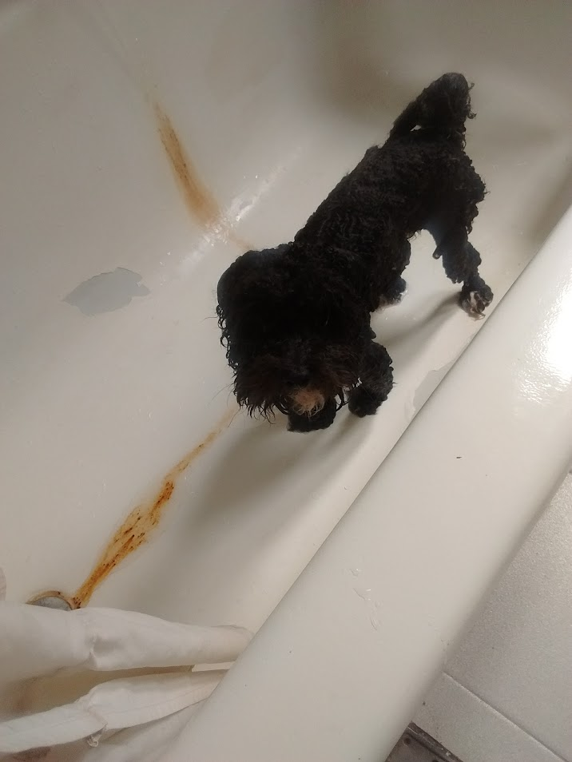
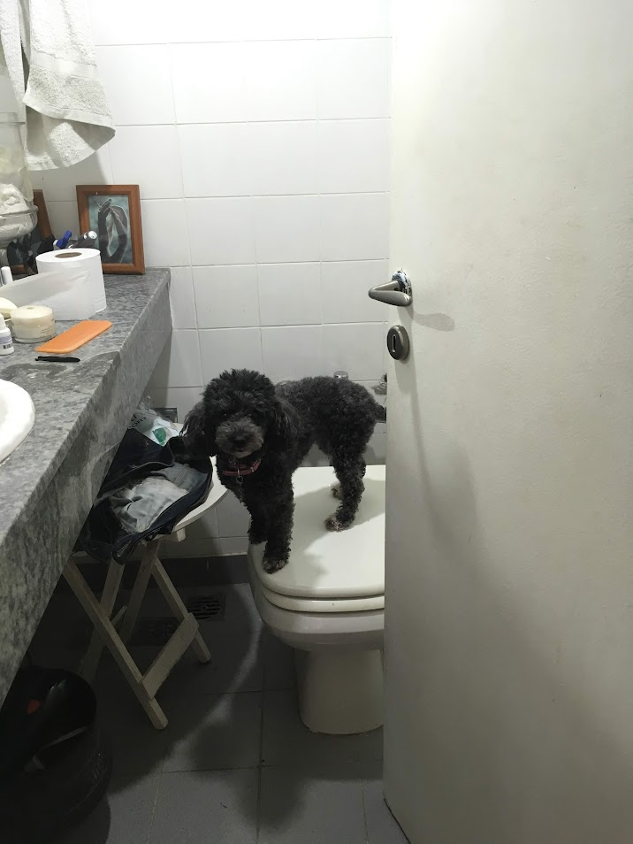
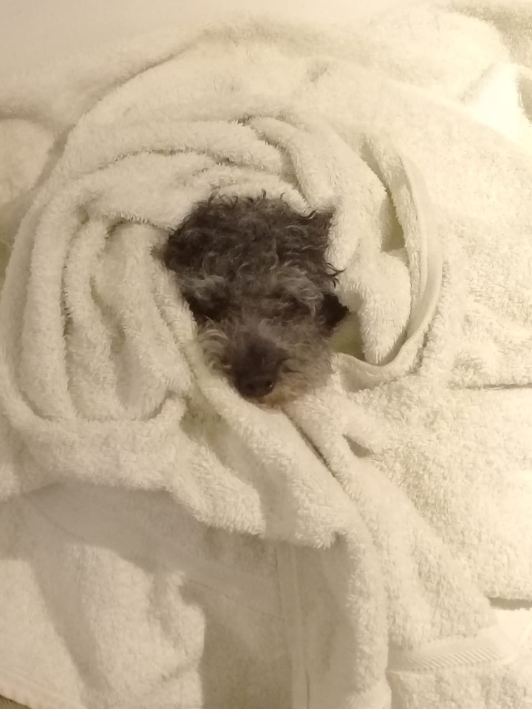
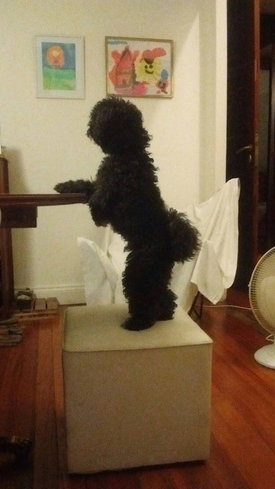
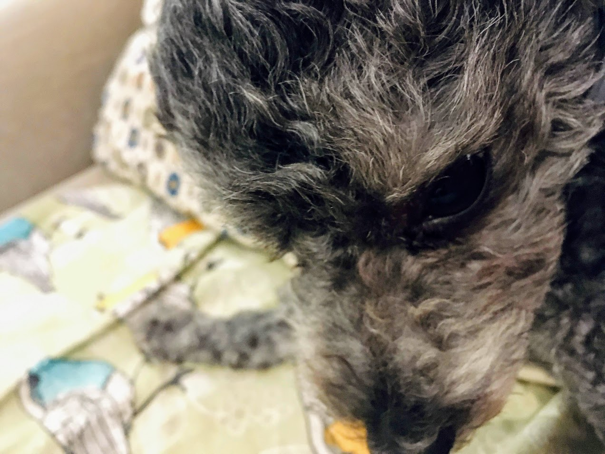
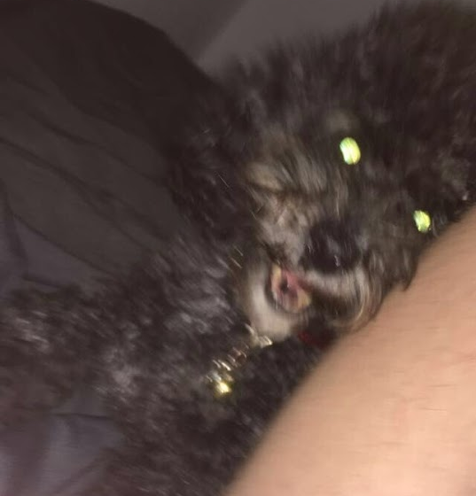
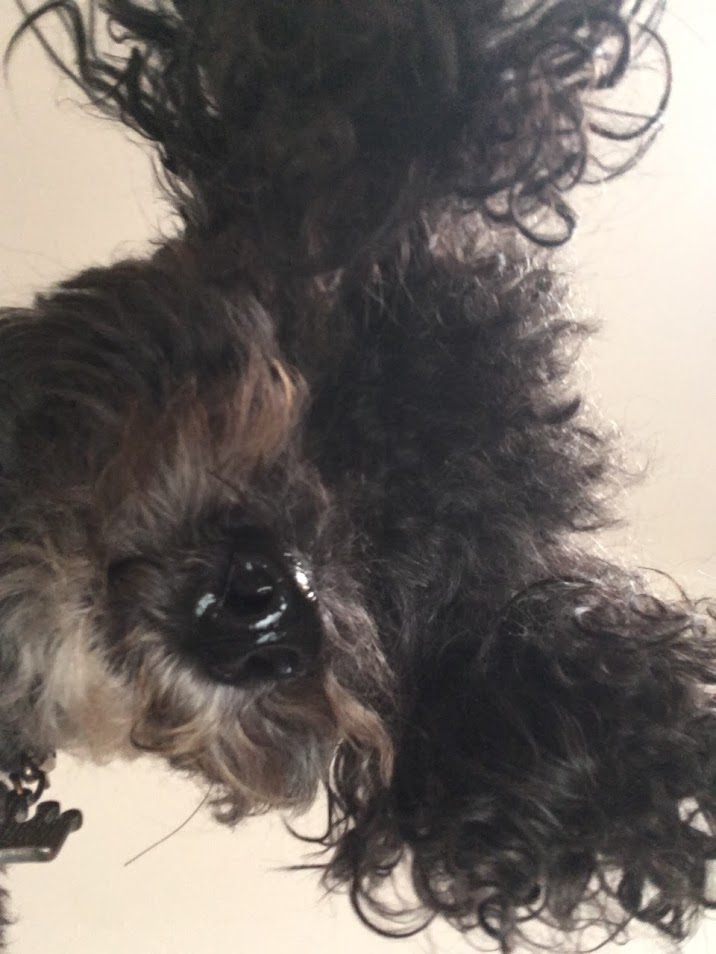
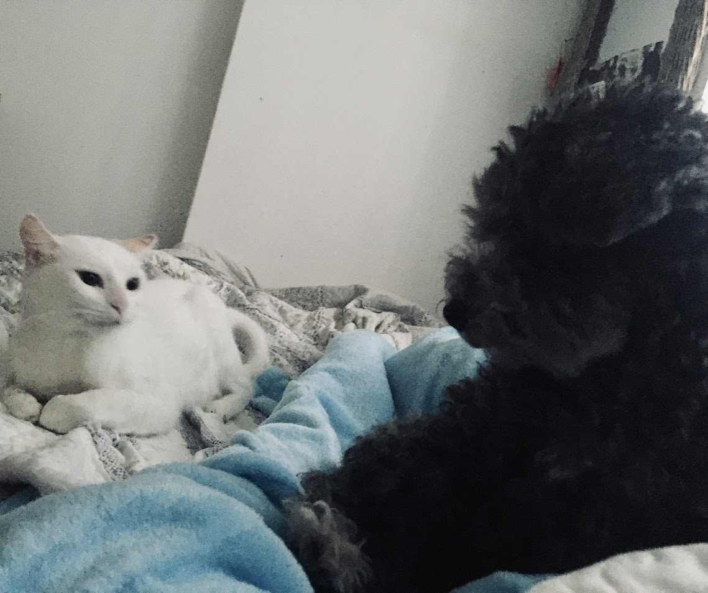
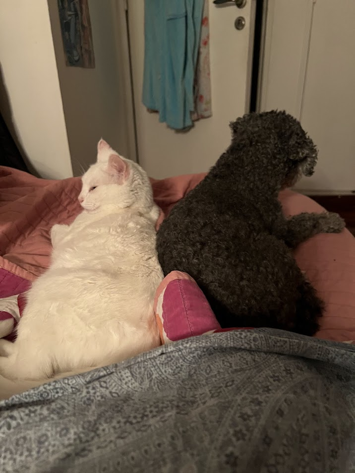
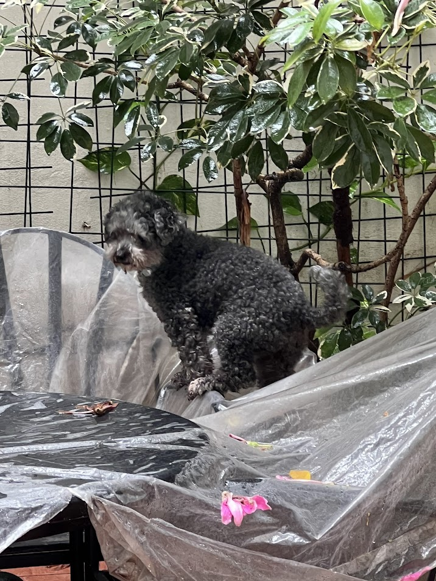

Donna
Gata residente
"Me usa de almohada aunque esté mojada. No es el trato que merece un pelaje como el mío."

Malva tuvo su primer bañito en 2016 y desde entonces decidió que quería oler a pata toda su vida.
"¿Bañarse, en esta economía?" es algo que probablemente diría Malva si pudiese hablar.
Malva es una perrita muy juguetona y cariñosa, excepto a la hora de bañarse, porque se transforma en el pomberito.
Y, por suerte, solamente ladra. Y mucho.
/ \__ ( @\___ / O / (_____/ /_____/ U



Aunque es de público conocimiento que Malva disfruta de jugar con agua sucia del patio, no tiene interés en entender que bañarse es también esencial.
Solo si aparecés con una toalla y un shampoo. Es imprescindible que quién se acerque a ella con estos objetos sepa el riesgo que corre.
Sí. Cuotas de queso/uvas sin semillas en medidas equitativas.



__ __
o-''))_____\\
"--__/ * * * )
c_c__/-c____/
Gata residente
"Me usa de almohada aunque esté mojada. No es el trato que merece un pelaje como el mío."
Mami de dos criaturitas
"La vi parada en dos patas a las tres de la mañana. Prefiero pensar que fue un sueño."
No quiere dar su identidad
"Dejé un queso cremoso sobre la mesa. Cinco minutos después ya tenía marcas de dientes. No puedo probar nada, pero todos sabemos quién fue."



Visitantes este mes
Quesos cremosos robados
Último baño registrado de Malva